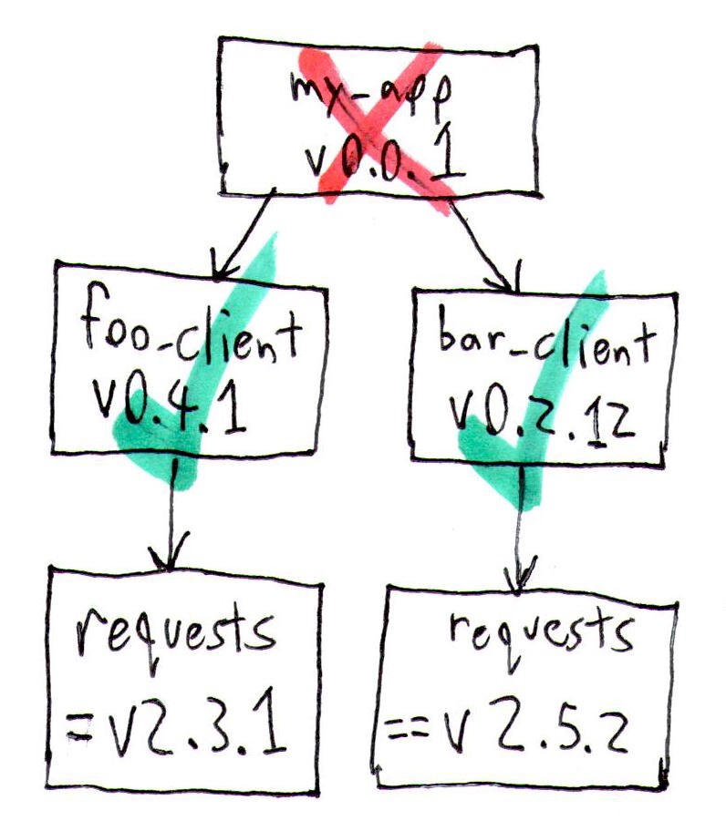

Keyboard shortcuts:
N/СпейсNext Slide
PPrevious Slide
OSlides Overview
ctrl+left clickZoom Element
If you want print version => add '
?print-pdf' at the end of slides URL (remove '#' fragment) and then print.
Like: https://wwwcourses.github.io/...CourseIntro.html?print-pdf
Installing Python Packages - the safe way
Created for
Iva E. Popova, 2016-2022,

PIP - the Python Package Manager
PIP - the Python Package Manager
- Python has a strong community which releases lot's of modules(packages), which you can use for free and focus on "get job done", instead of reinventing the wheel.
- pip is the tool for installing Python packages from PyPI (Python Package Index)
- Note, that if you do not use a Virtual Environment, a package installed by using pip will be installed in your system's python distribution.
pip basic commands
- get help on pip:
- pip help
- install a package from PyPI:
- pip install package_name
- uninstall a package
- pip uninstall package_name
- list installed packages:
- pip list
- upgrade a package:
- pip install --upgrade SomePackage
- show information about installed packages.:
- pip show package_name
- output installed packages in requirements format
- pip freeze
Reference: pip commands
More readings
Python Virtual Environments
Python Virtual Environments
Virtual environment - Why?
- Python apps usually depends on many modules(packages), which depends on other packages, and very often - from a specific version of a package.
- Many system tools also depends on specific versions of installed Python packages.
- You don't want to pollute your system's Python environment or to deal with dependency hell! 
{kind=link}
Virtual environment - What?
- A virtual environment is an isolated Python environment that allows packages to be installed for use by a particular application, rather than being installed system wide
- A virtual environment is a directory tree which contains Python interpreter, libraries and scripts installed into it, and other files which indicate that it is a virtual environment.
- There are many tools for working with virtual environments in Python (virtualenv, pipenv, poetry, conda, etc.)
- Starting with Python 3.4,
venvmodule is the preferred way to create and manage virtual environments. - venv module is included in the Python standard library and requires no additional installation.
Create Virtual Environment
# make sure you are in project folder, where you want to use virtual environment
# create virtual environment with name ".venv"
python3 -m venv .venv
# a folder '.venv' is created in the project folder
.venvis a common name for a virtual environment as it keeps the directory typically hidden in your shell.- Note, that you need to create a virtiual environment per project only once. But each time you work in your project you must activate it.
- In order to install and use python packages in your virtiual env, you must activate it:
- If on PowerShell you receive an error File ... cannot be loaded because running scripts is disabled on this system you must first set the PowerShell execution policies (Set-ExecutionPolicy @microsoft.com):
- You can confirm you’re in the virtual environment by checking the location of your Python interpreter:
- If you want to switch projects or otherwise leave your virtual environment, simply run
# On Windows PowerShell run:
.venv\Scripts\Activate.ps1
# On Windows CommandPrompt run:
.venv\Scripts\activate.bat
# On Windows GitBash run:
source .venv\Scripts\activate
# On Linux, MacOS, run:
source .venv/bin/activate
Set-ExecutionPolicy Unrestricted -Scope Process
# now try again to activate:
.venv\Scripts\Activate.ps1
# On Windows, run:
where python
# On Unix or MacOS, run:
which python
# It should be in the .venv directory
deactivate
References
- Virtual Environments and Packages @python3 tutorial
Installing packages using pip and virtual environments
Installing packages using pip and virtual environments
Live Demo
These slides are based on
customised version of
framework